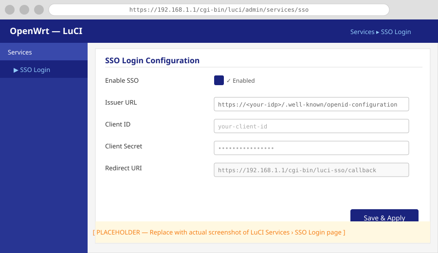
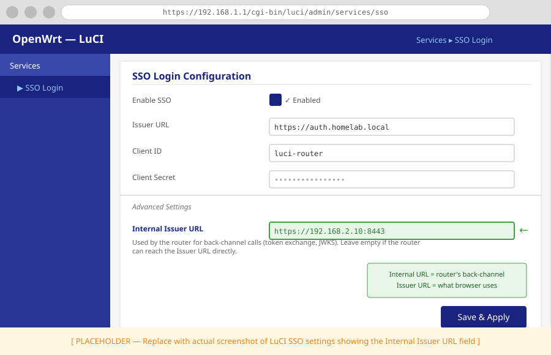

How to Configure luci-sso in the LuCI Web Interface¶
This guide walks through the Services > SSO Login settings page. Use it when you already have credentials from your identity provider and want to enter or update them directly in LuCI.
If you are connecting to a specific provider for the first time, use the provider guides instead — they cover IdP registration and these router settings together in one flow.
1. Open the settings page¶
Log in to LuCI and navigate to Services > SSO Login.
The page has two sections: Settings (OIDC provider credentials) and Users (role-based access control).

2. Fill in the Settings section¶
Enable SSO¶
Turns the SSO login button on or off. When disabled, the button disappears from the LuCI login page and all SSO login attempts return {"enabled": false}. Password login is not affected.
Issuer URL¶
The base URL of your identity provider's OIDC discovery endpoint. luci-sso fetches <issuer_url>/.well-known/openid-configuration to locate the token endpoint and JWKS. Must use HTTPS and match the issuer field in the discovery document exactly.
Client ID and Client Secret¶
The OAuth2 credentials from your identity provider's client registration. The secret is stored in /etc/config/luci-sso — protect that file.
Redirect URI¶
The callback URL the IdP redirects the browser to after authentication. It is pre-filled with https://<your-router-hostname>/cgi-bin/luci-sso/callback. This value must exactly match the redirect URI registered with the IdP.
Scopes¶
Space-separated OIDC scopes requested during login. The default openid profile email covers email-based role mapping. Add groups if your provider supports group claims and you want group-based role mapping — see How to Configure Role-Based Access Control for details.
Clock Tolerance¶
Seconds of allowed clock skew during JWT validation. The default 60 is sufficient for most setups. Increase it if logins fail with TOKEN_EXPIRED despite clocks that appear synchronized.
Internal Issuer URL¶
Leave empty unless your router reaches the IdP at a different address than your browser does. When set, luci-sso uses this URL for back-channel requests (token exchange, JWKS fetch) while still validating the iss claim against the public Issuer URL. See How to Configure Split-Horizon Networking.

3. Configure access in the Users section¶
The Users section manages roles. A role maps OIDC claims to LuCI permissions. When a user logs in, every role whose conditions match is applied and permissions are merged.
Add a role¶
Click Add and enter a name (alphanumeric and underscores). In the modal:
- Email Addresses — one address per entry. Matched case-insensitively against the OIDC
emailclaim. - Groups — one group name per entry. Matched case-sensitively against the OIDC
groupsclaim. Some providers append a suffix (e.g. Pocket ID returnsGroupName@PocketID). - Read Access — LuCI ACL group names this role may read. Use
*to allow all groups. - Write Access — LuCI ACL group names this role may write. Leave empty for read-only access.
Click Save to close the modal.
Edit or remove a role¶
Use the pencil icon to edit a role's modal, or the trash icon to delete it. A user who matched only a deleted role will receive USER_NOT_AUTHORIZED on their next login.
4. Save & Apply¶
Click Save & Apply to write the configuration to /etc/config/luci-sso. There is no service to restart — luci-sso reads configuration on every request, so changes take effect on the next login attempt.
Reset reverts the form to the last saved state without writing anything.
Next steps¶
- Map users by group instead of email: How to Configure Role-Based Access Control
- Update credentials after a provider rotation: How to Rotate Credentials
- Configure a split-horizon setup: How to Configure Split-Horizon Networking